High Dynamic Range Imaging
CS 180: Computer Vision and Computational Photography, Fall 2024
Rebecca Feng and Austin Zhu
In this project, we recover the full dynamic range of the world that is unable to be captured by
cameras. By using multiple exposures of the same image, we can recover a high dynamic range photo
for many images. This project follows the algorithms outlined in
Debevec and Malik 1997
and Durand 2002.
An example of the different exposure images are shown below for the St. Louis Arch:
 1/25 second exposure.
1/25 second exposure.
|
 1/4 second exposure.
1/4 second exposure.
|
 3 seconds exposure.
3 seconds exposure.
|
 17 seconds exposure.
17 seconds exposure.
|
Recovering a Radiance Map from a Collection of Images
First, we want to construct an HDR radiance map from several LDR exposures, where the image pixel values (\(Z_{ij}\))
are a function of our scene radiance (\(E_i\)) and exposure duration (\(\Delta t_j\)), \(Z_{ij} = f(E_i \Delta t_j)\).
We ultimately want to solve for the log radiance values using \(g = ln(f^{-1})\), so then
we have the relation \(g(Z_{ij}) = ln(E_i) + ln(t_j)\).
Solving for g
In order to solve for \(g\), Debevec finds the values of \(g(Z_i)\) and \(ln(E_i)\) which
minimizes the following quadratic objective function:
$$\mathcal{O} = \sum_{i=1}^N\sum_{j=1}^P \{w(Z_{ij})[g(Z_{ij} - ln(E_i) - ln\Delta t_j]\}^2 +
\lambda \sum_{i=Z_{min}+1}^{Z_max-1}[w(z)g''(z)]^2$$
noting that:
- \(i\) indexes the pixel locations and \(j\) indexes the images.
- \(w(\cdot)\) is a weighting function (in this case, a triangle function) which reduces
the contribution of extreme pixel values due to issues of noise and saturation.
- The \(\lambda\) enforces smoothness of \(g\) through its second derivative. The second
derivative is approximated by \(g''(x) = g(x-1) - 2g(x) + g(x+1)\).
This minimization problem reduces to the solving of an overdetermination linear system of equations,
which we solve using the provided MATLAB pseudocode from Debevec.
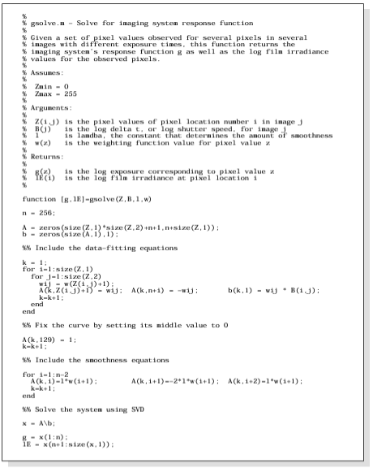
Debevec pseudocode for solving for g.
Running our code on the arch photos, we obtain the following functions of g for our RGB channels:
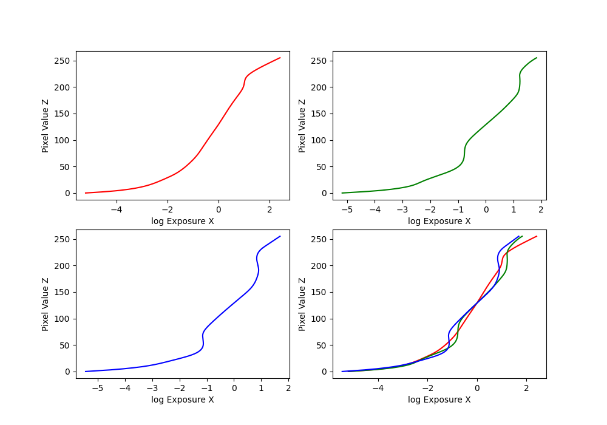
g function curves for the arch photos.
Recovering Our Scene Radiances
Now that we have our \(g\) functions, we can find our log radiances by rearranging the terms to get
\(ln(E_i) = g(Z_{ij}) - ln(\Delta t_j)\). But taking into account our weighting function \(w(\cdot)\) again,
we get the equation from Debevec:
$$ln(E_i) = \frac{\sum_{j=1}^P w(Z_{ij})(g(Z_{ij})-ln\Delta t_j)}{\sum_{j=1}^P w(Z_{ij})}$$
Then, we simply need to exponentiate in order to construct our scene radiances. The results of applying
this algorithm to the arch photos is shown below:
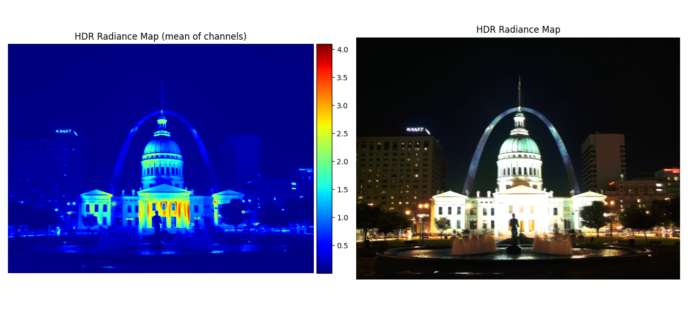
Radiance maps for the arch photos.
Converting This Radiance Map into a Display Image
Now that we have our radiance maps, we need to properly display our images using the results.
This will involve performing transforms on our radiance values, followed by stretching the intensity
values to fill the whole [0 255] range.
For our project, we consider the following three transformations:
-
Global Scale: the naive solution of simply linearly mapping our intensity values
from 0 to 1.
-
Global Simple: applying the transformation \(L/(1+L)\) onto our radiance values, then
stretching the values.
-
Durand: here we implement a simplified version of the algorithm outlined in Durand 2002,
with the following steps with our RVG values of radiance as inputs:
- Replace zeros with some small number.
- Compute the intensity (I) by taking a weighted average of the color channels
to scale for human perception. Weights taken from OpenCV.
- Compute the chrominance channels: (R/I, G/I, B/I).
- Compute the log intensity: L = log2(I).
- Filter it with a bilateral filter: B=bf(L). Note we use
cv2.bilateralFilter
with the parameters d=9, sigmaColor=75, sigmaSpace=75.
- Compute the detail layer: D = L - B.
- Apply an offset and scale to the base: B' = (B-o)*s. Note \(o=max(B)\) so the max intensity is 1
and \(s=\frac{dR}{max(B)-min(B)}\) where we use \(dR=5\).
- Reconstruct the log intensity: O = 2^(B'+D).
- Put back the colors: R',G',B'=O*(R/I, G/I, B/I).
- Apply gamma compression by taking the square root of all values.
Applying these transformations to our arch photos again, we obtain the following results:
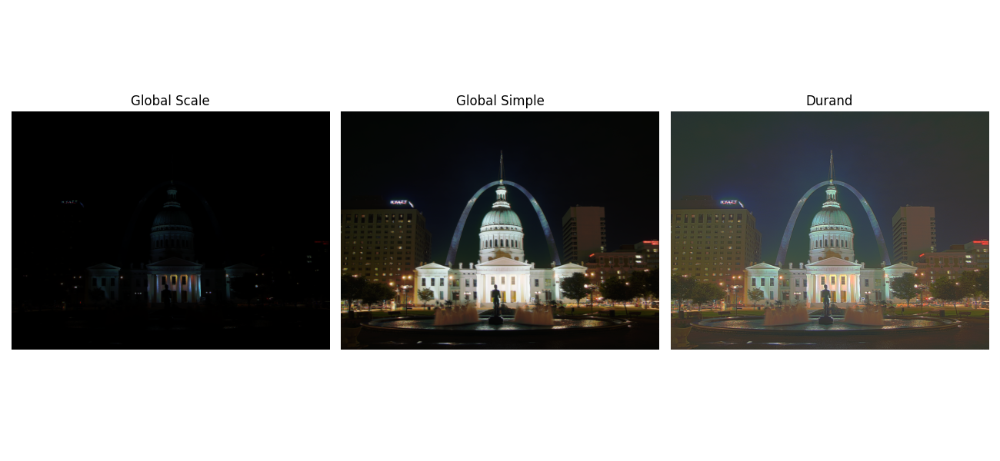
More test images!!
Below we show the results for the rest of the provided test images:
Bonsai tree:
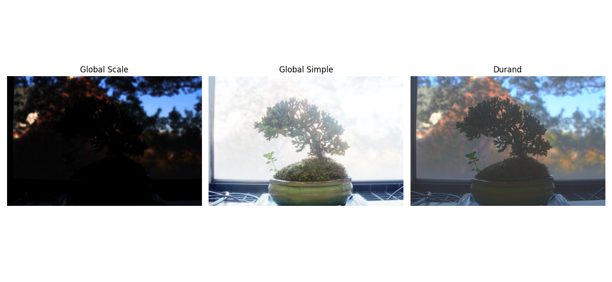
Chapel:
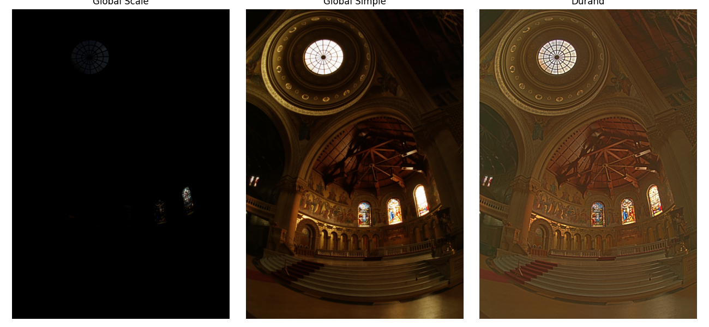
Garage:
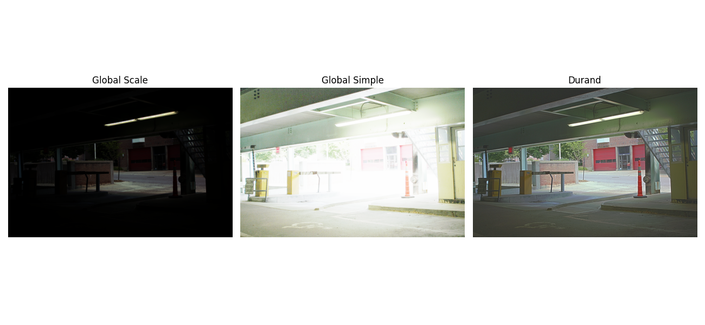
Garden:
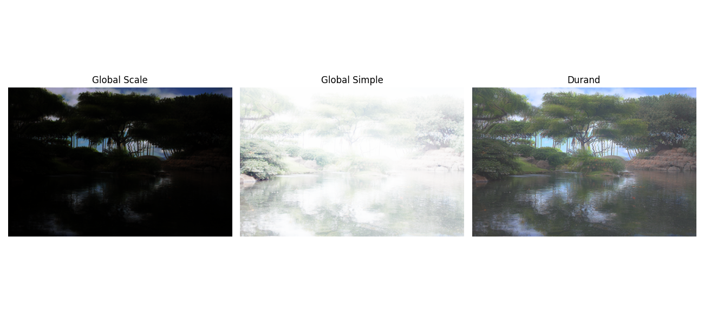
House:
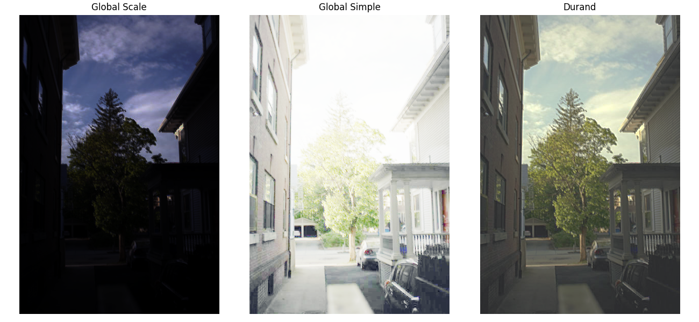
Mug:
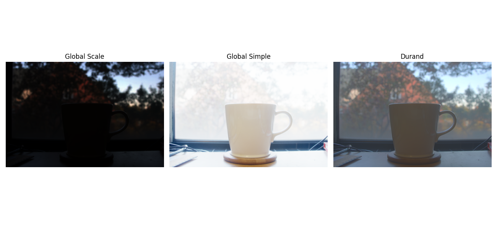
Window:
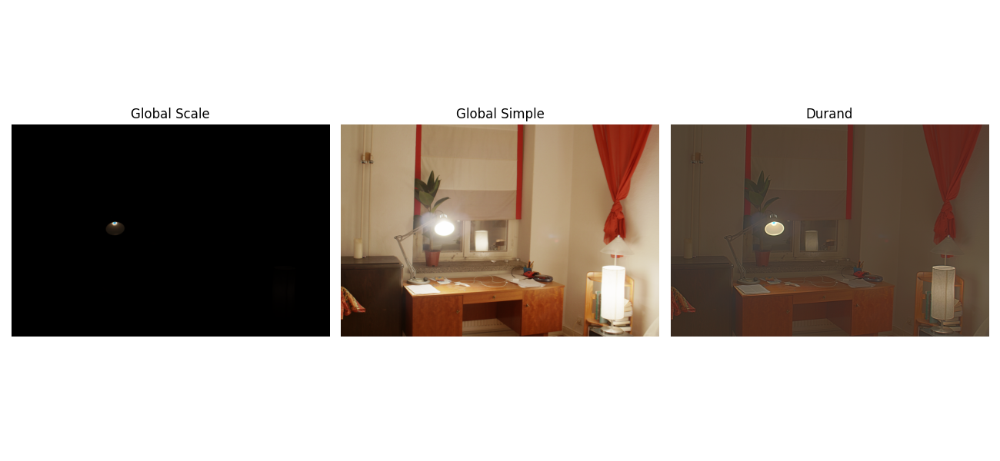
A few things to note:
-
Over the range of test images we have, the different tone mappings appear to vary
quite a bit in terms of quality depending on the original image. Global simple appears
to do well on lower light level images such as the arch, chapel, and window, while the
Durand algorithm does better with higher light levels.
- The garden images were slightly misaligned and you see that in the blurry results.
Additionally, we show the bilateral filtering decomposition results into the detail and large
scale structure for the chapel images below:
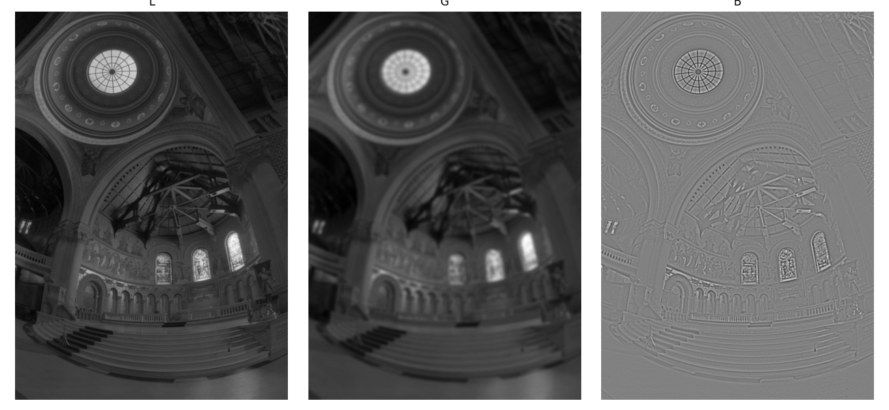
Bilateral decomposition for chapel.
Bells & Whistles
For our bells and whistles, we apply our algorithms to our own images. Below are the images we
used:
|
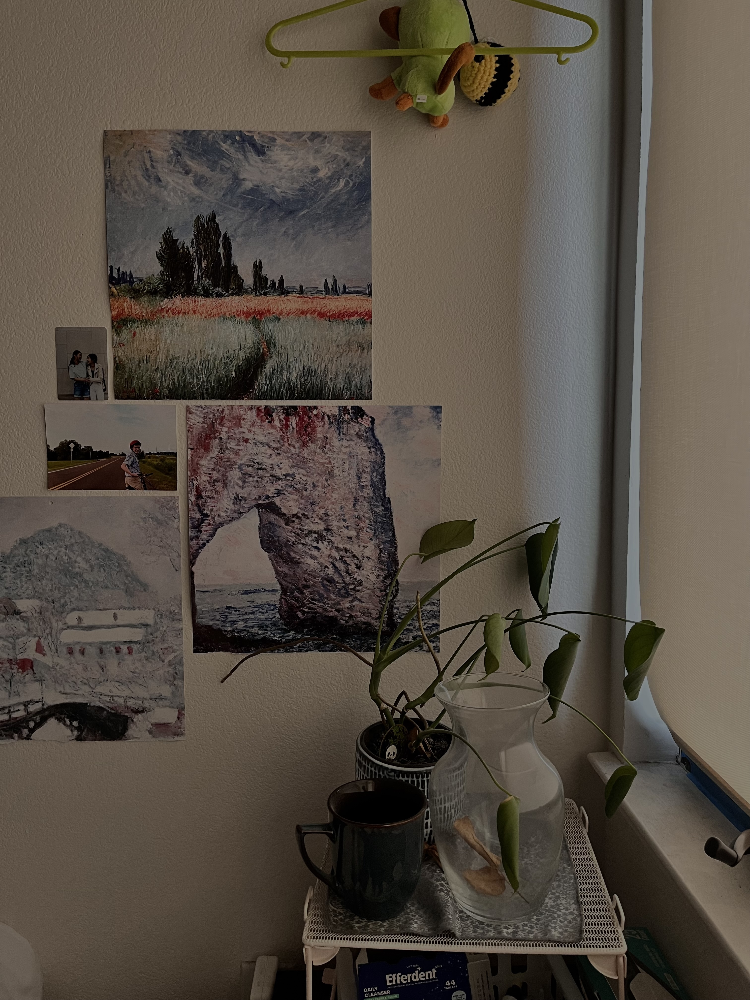
1/10 second exposure.
|
 1/5 second exposure.
1/5 second exposure.
|
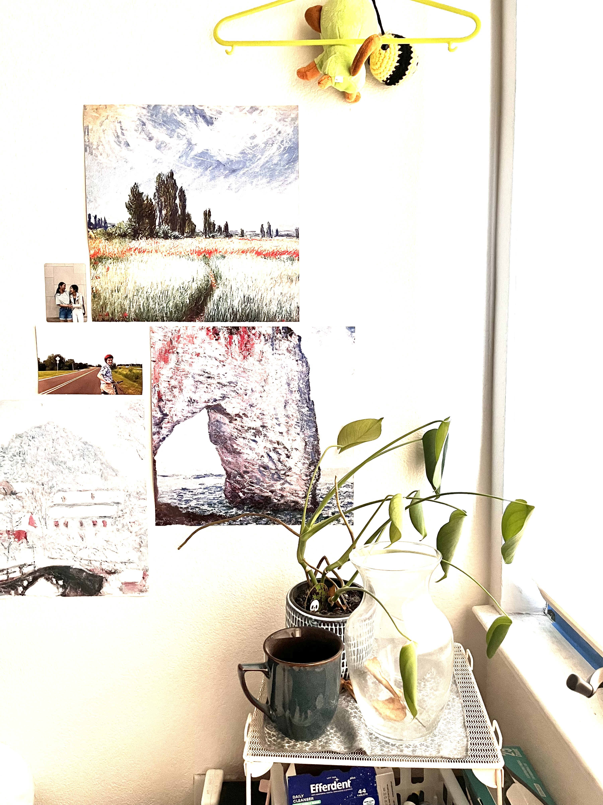
1 second exposure.
|
Using these different exposures, we obtain the following HDR images:
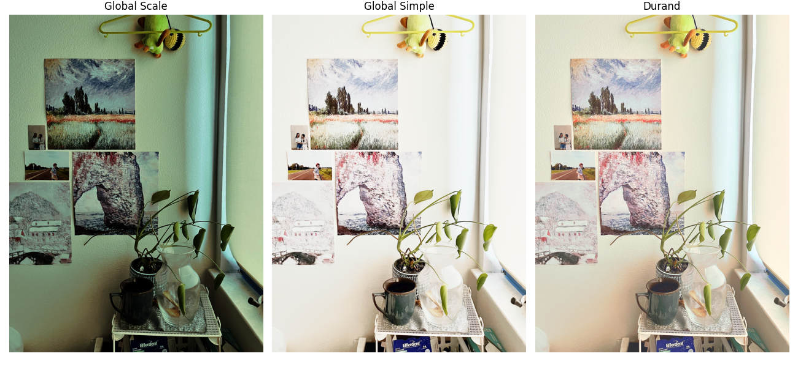